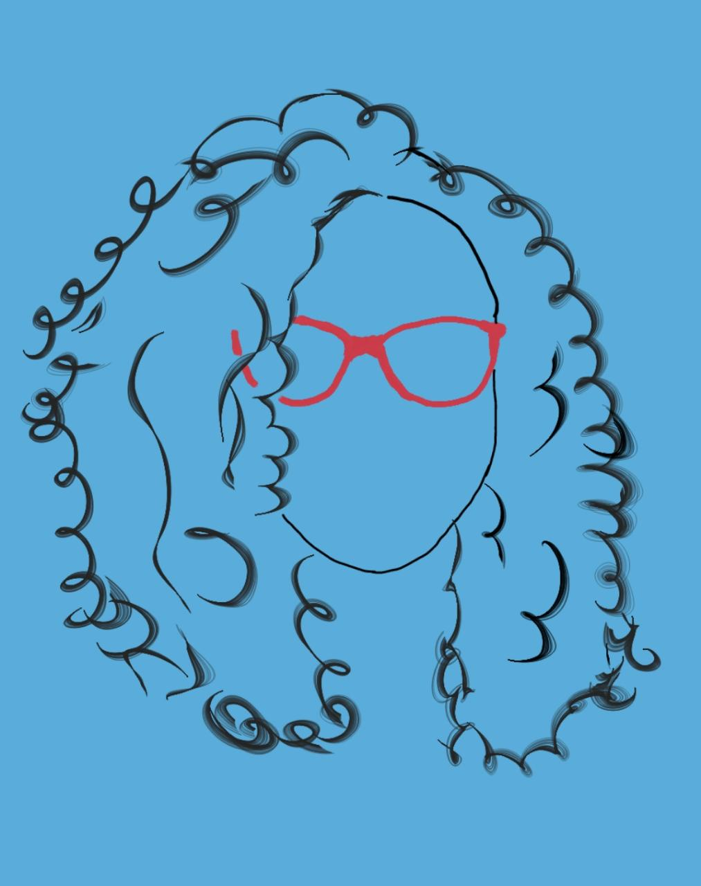

Letícia Lopes
Estudante de UXR e Programação
Socióloga pela UFSCar, sempre fui curiosa em entender pessoas, seus contextos e trajetórias com respeito empatia. Em processo de transição de carreira, busco transportar as habilidades desenvolvidas na academia para a experiência do usuário, além de me aventurar e abrir novos horizontes estudando front-end pelo Instituto Minas Programam.